Renders a publication-quality Manhattan plot for genetic association results. The y-axis displays \(-\log_{10}(p)\) (or a user-specified transformation) of p-values, and the x-axis shows genomic positions organised by chromosome. Each chromosome is rendered in alternating colours, and configurable horizontal dashed lines mark genome-wide significance thresholds.
The function is adapted from ggmanh::manhattan_plot() with
extended control over point appearance, variant labels, highlighting,
data thinning, y-axis rescaling, and split_by support for
creating multi-panel layouts (e.g. faceted by cohort or phenotype).
Usage
ManhattanPlot(
data,
chr_by,
pos_by,
pval_by,
split_by = NULL,
split_by_sep = "_",
label_by = NULL,
chromosomes = NULL,
pt_size = 0.75,
pt_color = NULL,
pt_alpha = alpha,
pt_shape = 19,
label_size = 3,
label_fg = NULL,
highlight = NULL,
highlight_color = NULL,
highlight_size = 1.5,
highlight_alpha = 1,
highlight_shape = 19,
preserve_position = TRUE,
chr_gap_scaling = 1,
pval_transform = "-log10",
signif = c(5e-08, 1e-05),
signif_color = NULL,
signif_rel_pos = 0.2,
signif_label = TRUE,
signif_label_size = 3.5,
signif_label_pos = c("left", "right"),
thin = NULL,
thin_n = 1000,
thin_bins = 200,
rescale = TRUE,
rescale_ratio_threshold = 5,
palette = "Dark2",
palcolor = NULL,
palreverse = FALSE,
alpha = 1,
theme = "theme_this",
theme_args = list(),
title = NULL,
subtitle = NULL,
xlab = NULL,
ylab = expression("-" * log[10](p)),
seed = 8525,
combine = TRUE,
nrow = NULL,
ncol = NULL,
byrow = TRUE,
axes = NULL,
axis_titles = axes,
guides = NULL,
facet_by = NULL,
design = NULL,
...
)Arguments
- data
A data frame.
- chr_by
A character string specifying the column name for chromosome identifiers. Default:
"chr".- pos_by
A character string specifying the column name for genomic positions (integer or numeric). Default:
"pos".- pval_by
A character string specifying the column name for p-values (numeric). Default:
"pval".- split_by
The column(s) to split data by and produce separate sub-plots. Multiple columns are concatenated with
split_by_sep.- split_by_sep
A character string used to concatenate multiple
split_bycolumn values. Default:"_".- label_by
A character string specifying the column name for variant labels. Only variants with non-empty values in this column will be labelled. Default:
NULL(no labels).- chromosomes
A character or numeric vector specifying which chromosomes to include and/or their display order. When
NULL(the default), all chromosomes present in the data are plotted in their natural factor order. A single value filters to that chromosome; a vector reorders and subsets.- pt_size
A numeric value specifying the size of the points. Default:
0.75.- pt_color
A character string specifying a single colour for all background (non-highlighted) points. When
NULL(the default), alternating chromosome colours frompalette/palcolorare used. Typically set to"grey80"whenhighlightis used with a distincthighlight_color.- pt_alpha
A numeric value in
[0, 1]specifying the transparency of the points. Default:alpha(aliased parameter).- pt_shape
A numeric value specifying the shape of the points. Default:
19(filled circle).- label_size
A numeric value specifying the font size of the variant labels. Default:
3.- label_fg
A character string specifying the colour of the variant labels. When
NULL(the default), each label inherits the colour of its corresponding point.- highlight
Either a numeric vector of row indices or a character string containing an R expression (parsed via
rlang::parse_expr()) to select variants to highlight. Default:NULL(no highlighting).- highlight_color
A character string specifying the colour of highlighted points. When
NULL(the default), highlighted points inherit the chromosome colour from the underlyinggeom_point()layer.- highlight_size
A numeric value specifying the size of highlighted points. Default:
1.5.- highlight_alpha
A numeric value in
[0, 1]specifying the transparency of highlighted points. Default:1.- highlight_shape
A numeric value specifying the shape of highlighted points. Default:
19(filled circle).- preserve_position
A logical value. When
TRUE(the default), the width of each chromosome segment reflects its number of variants and variant positions are correctly scaled. WhenFALSE, all chromosomes have equal width and variants are equally spaced.- chr_gap_scaling
A numeric scaling factor for the gap between chromosomes. Larger values increase the gap. Default:
1.- pval_transform
A function or character string that can be evaluated to a function for transforming p-values. Default:
"-log10", which computes \(-\log_{10}(p)\). Other examples:"-log2"or a customfunction(x) -log10(x).- signif
A numeric vector of significance thresholds to draw as horizontal dashed lines. Default:
c(5e-8, 1e-5).- signif_color
A character vector of colours for the significance threshold lines, of equal length as
signif. WhenNULL(the default), the smallest threshold is coloured black and the rest grey.- signif_rel_pos
A numeric value between
0.1and0.9specifying the relative position of the y-axis jump when rescaling is active. Default:0.2.- signif_label
A logical value. When
TRUE(the default), significance threshold values are annotated on the plot.- signif_label_size
A numeric value for the font size of the significance threshold labels. Default:
3.5.- signif_label_pos
A character string specifying where to place the significance threshold labels:
"left"(default) or"right".- thin
A logical value indicating whether to thin dense data by sampling points per horizontal partition. Defaults to
TRUEwhenchromosomesselects fewer chromosomes than in the data, andFALSEotherwise.- thin_n
An integer specifying the maximum number of points per horizontal partition after thinning. Default:
1000.- thin_bins
An integer specifying the number of horizontal bins for thinning. Default:
200.- rescale
A logical value. When
TRUE(the default), the y-axis is automatically rescaled (broken axis) if extreme significance values would otherwise compress the main data cloud.- rescale_ratio_threshold
A numeric threshold for triggering y-axis rescaling. The ratio is computed as
ceiling(max(log10pval) / 5) * 5 / signif_jump. Default:5.- palette
A character string specifying the palette to use. A named list or vector can be used to specify the palettes for different
split_byvalues.- palcolor
A character string specifying the color to use in the palette. A named list can be used to specify the colors for different
split_byvalues. If some values are missing, the values from the palette will be used (palcolor will be NULL for those values).- palreverse
A logical value indicating whether to reverse the palette. Default is FALSE.
- alpha
A numeric value specifying the transparency of the plot.
- theme
A character string or a theme class (i.e. ggplot2::theme_classic) specifying the theme to use. Default is "theme_this".
- theme_args
A list of arguments to pass to the theme function.
- title
A character string specifying the title of the plot. A function can be used to generate the title based on the default title. This is useful when split_by is used and the title needs to be dynamic.
- subtitle
A character string specifying the subtitle of the plot.
- xlab
A character string specifying the x-axis label.
- ylab
A character string specifying the y-axis label.
- seed
A numeric seed for reproducibility. Passed to
validate_common_args(). Default:8525.- combine
A logical value. When
TRUE(the default), the list of per-split plots is combined into a singlepatchworkobject. WhenFALSE, returns the raw list.- nrow, ncol, byrow
Integers controlling the layout of combined plots via
patchwork::wrap_plots().byrow = TRUEfills the layout row-wise.- axes, axis_titles
Strings controlling how axes and axis titles are handled across combined plots. Passed to
combine_plots(). See?patchwork::wrap_plotsfor options ("keep","collect","collect_x","collect_y").- guides
A string controlling guide collection across combined plots. Passed to
combine_plots().- facet_by
A character string specifying the column name of the data frame to facet the plot. Otherwise, the data will be split by
split_byand generate multiple plots and combine them into one usingpatchwork::wrap_plots- design
A custom layout specification for combined plots. Passed to
combine_plots(). When specified,nrow,ncol, andbyroware ignored.- ...
Additional arguments.
Value
A ggplot object (single plot, no split_by), a
patchwork object (when combine = TRUE with
split_by), or a named list of ggplot objects (when
combine = FALSE). Each individual plot carries
height and width attributes.
Note
facet_by is not supported by this plot type and triggers
a warning if provided. Use split_by instead to produce
comparable multi-panel layouts.
split_by Workflow
When split_by is provided:
Column validation —
check_columns()resolvessplit_bywithforce_factor = TRUE,allow_multi = TRUE, andconcat_multi = TRUE. ForGRangesinputs, validation is performed on the@elementMetadataslot.GRanges support —
datacan be adata.frameor aGenomicRanges::GRangesobject. WhenGRangesis used,split_byis read from the metadata columns.Data splitting — drops unused
split_bylevels, splitsdatabysplit_by(preserving factor level order), and wraps into a named list. Whensplit_byisNULL, the data is wrapped as a single-element list with name"...".Per-split palette / colour —
check_palette()andcheck_palcolor()resolve per-split palette and colour overrides.Per-split title — when
titleis a function, it receives the default title (the split level name) and can return a custom string; otherwisetitle %||% split_levelis used.Dispatch — each split subset is passed to
ManhattanPlotAtomic.Combination —
combine_plots()assembles the list of plots viapatchwork::wrap_plots, honouringnrow/ncol/byrow/design.
Examples
# \donttest{
set.seed(1000)
nsim <- 50000
# --- Data simulation ---
simdata <- data.frame(
"chromosome" = sample(c(1:22,"X"), size = nsim, replace = TRUE),
"position" = sample(1:100000000, size = nsim),
"P.value" = rbeta(nsim, shape1 = 5, shape2 = 1)^7,
"cohort" = sample(c("A", "B"), size = nsim, replace = TRUE)
)
simdata$chromosome <- factor(simdata$chromosome, c(1:22, "X"))
options(repr.plot.width=10, repr.plot.height=5)
# --- Basic Manhattan plot ---
if (requireNamespace("ggmanh", quietly = TRUE)) {
ManhattanPlot(
simdata, pval_by = "P.value", chr_by = "chromosome", pos_by = "position",
title = "Simulated P.Values", ylab = "P")
}
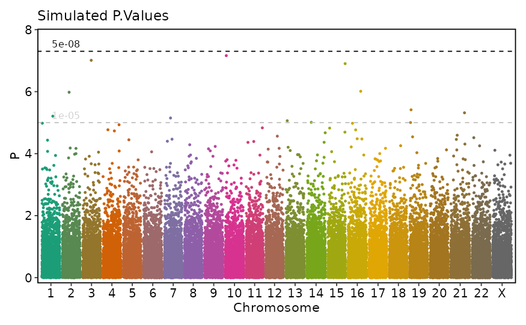
# --- split_by ---
if (requireNamespace("ggmanh", quietly = TRUE)) {
ManhattanPlot(
simdata, pval_by = "P.value", chr_by = "chromosome", pos_by = "position",
title = "Simulated P.Values", ylab = "P", split_by = "cohort", ncol = 1)
}
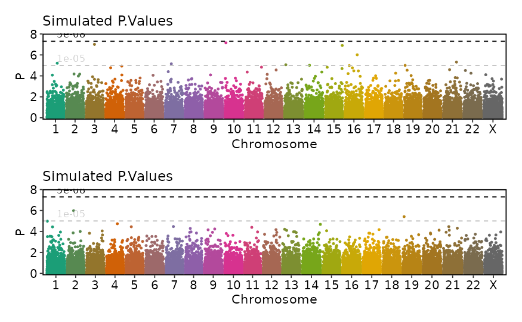
# --- Customized p-value transformation and significance threshold line colors ---
if (requireNamespace("ggmanh", quietly = TRUE)) {
ManhattanPlot(
simdata, pval_by = "P.value", chr_by = "chromosome", pos_by = "position",
title = "Simulated -Log2 P.Values", ylab = "-log2(P)", pval_transform = "-log2",
signif_color = c("red", "blue"))
}
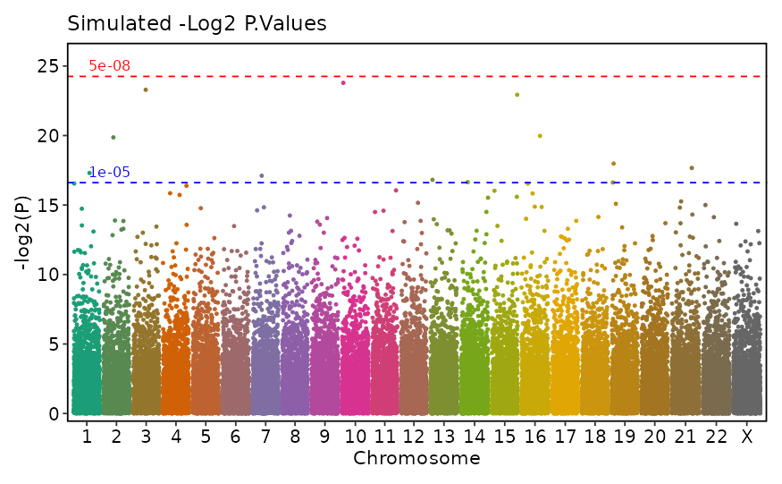
# --- Different palette and no significance threshold labels ---
if (requireNamespace("ggmanh", quietly = TRUE)) {
ManhattanPlot(
simdata, pval_by = "P.value", chr_by = "chromosome", pos_by = "position",
palette = "Set1", signif_label = FALSE)
}
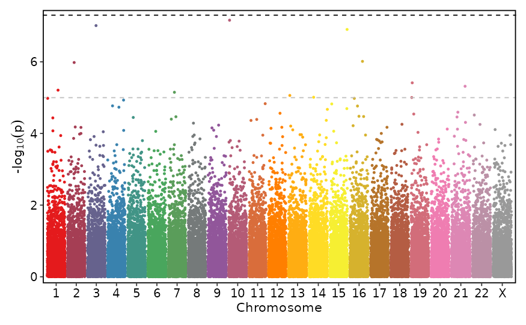
# --- Reverse palette and label position on the right ---
if (requireNamespace("ggmanh", quietly = TRUE)) {
ManhattanPlot(
simdata, pval_by = "P.value", chr_by = "chromosome", pos_by = "position",
palette = "Set1", palreverse = TRUE, signif_label_pos = "right")
}
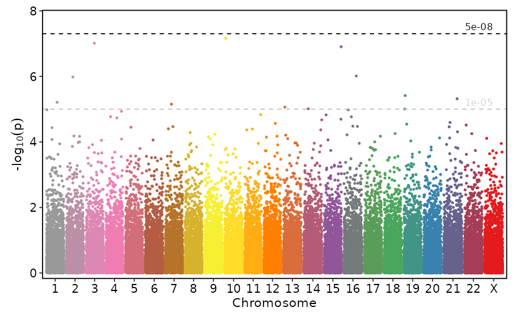
# --- Single chromosome ---
if (requireNamespace("ggmanh", quietly = TRUE)) {
ManhattanPlot(
simdata, pval_by = "P.value", chr_by = "chromosome", pos_by = "position",
title = "Simulated P.Values", chromosomes = 5)
}
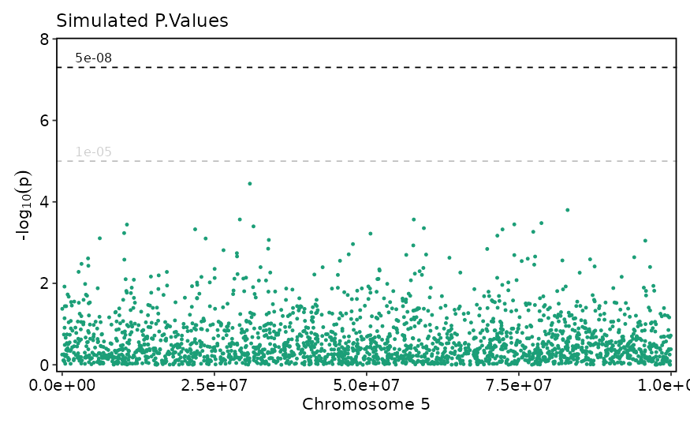
# --- Chromosome subset and reorder ---
if (requireNamespace("ggmanh", quietly = TRUE)) {
ManhattanPlot(
simdata, pval_by = "P.value", chr_by = "chromosome", pos_by = "position",
title = "Simulated P.Values", chromosomes = c(20, 4, 6))
}
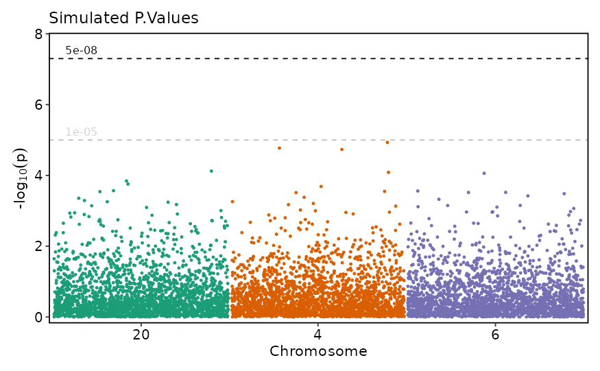
tmpdata <- data.frame(
"chromosome" = c(rep(5, 10), rep(21, 5)),
"position" = c(sample(250000:250100, 10, replace = FALSE),
sample(590000:600000, 5, replace = FALSE)),
"P.value" = c(10^-(rnorm(10, 100, 3)), 10^-rnorm(5, 9, 1)),
"cohort" = c(rep("A", 10), rep("B", 5))
)
simdata <- rbind(simdata, tmpdata)
simdata$chromosome <- factor(simdata$chromosome, c(1:22, "X"))
# --- Disable y-axis rescaling ---
if (requireNamespace("ggmanh", quietly = TRUE)) {
ManhattanPlot(
simdata, pval_by = "P.value", chr_by = "chromosome", pos_by = "position",
title = "Simulated P.Values - Significant", rescale = FALSE)
}
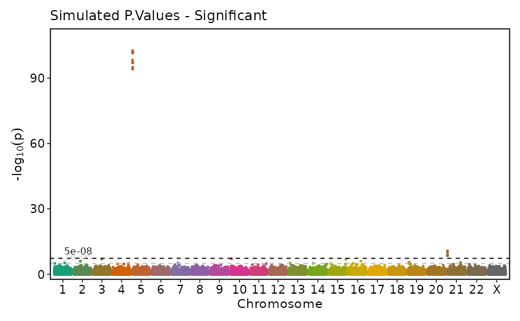
# --- Y-axis rescaling with custom break position ---
if (requireNamespace("ggmanh", quietly = TRUE)) {
ManhattanPlot(
simdata, pval_by = "P.value", chr_by = "chromosome", pos_by = "position",
title = "Simulated P.Values - Significant", rescale = TRUE, signif_rel_pos = 0.5)
}
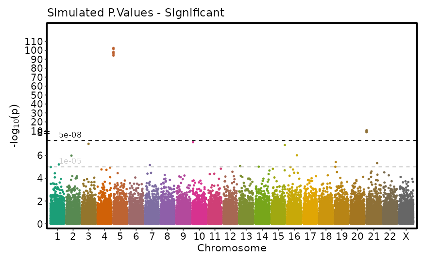
sig <- simdata$P.value < 5e-07
simdata$label <- ""
simdata$label[sig] <- sprintf("Label: %i", 1:sum(sig))
simdata$label2 <- ""
i <- (simdata$chromosome == 5) & (simdata$P.value < 5e-8)
simdata$label2[i] <- paste("Chromosome 5 label", 1:sum(i))
# --- Variant labels ---
if (requireNamespace("ggmanh", quietly = TRUE)) {
ManhattanPlot(simdata, label_by = "label", pval_by = "P.value", chr_by = "chromosome",
pos_by = "position", title = "Simulated P.Values with labels", label_size = 4)
}
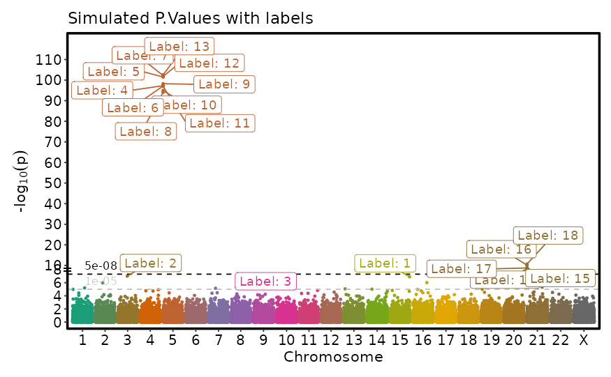
# --- Variant labels with custom color ---
if (requireNamespace("ggmanh", quietly = TRUE)) {
ManhattanPlot(simdata, label_by = "label2", pval_by = "P.value", chr_by = "chromosome",
pos_by = "position", title = "Simulated P.Values with labels",
label_size = 3, label_fg = "black")
}
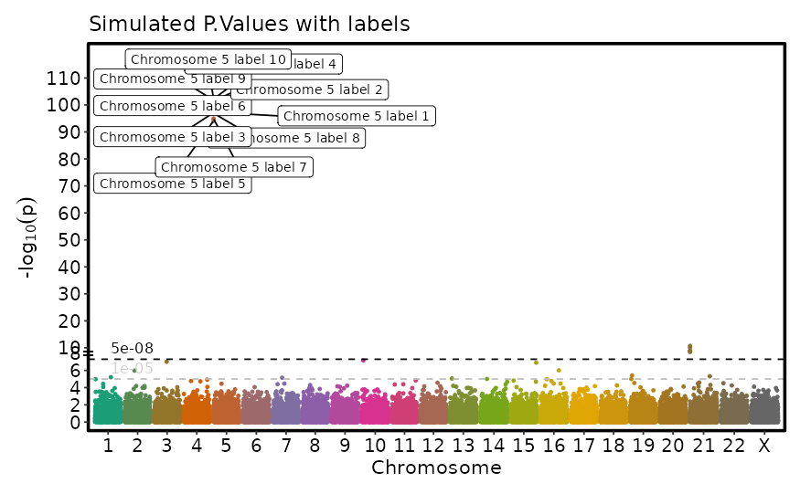
simdata$color <- "Not Significant"
simdata$color[simdata$P.value <= 5e-8] <- "Significant"
# --- Highlight points with custom shape ---
if (requireNamespace("ggmanh", quietly = TRUE)) {
ManhattanPlot(simdata, title = "Highlight Points with shapes",
pval_by = "P.value", chr_by = "chromosome", pos_by = "position",
highlight = "color == 'Significant'", highlight_color = NULL, highlight_shape = 6,
highlight_size = 5, pt_alpha = 0.2, pt_size = 1)
}
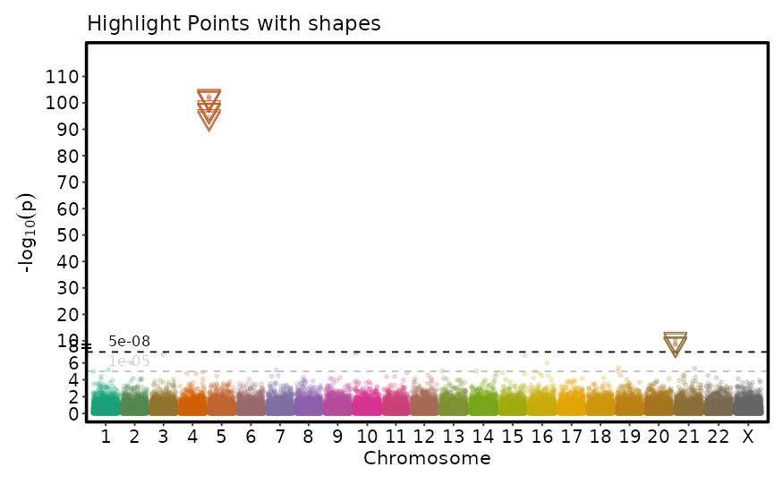
# --- Highlight points with custom color ---
if (requireNamespace("ggmanh", quietly = TRUE)) {
ManhattanPlot(simdata, title = "Highlight Points",
pval_by = "P.value", chr_by = "chromosome", pos_by = "position",
highlight = "color == 'Significant'", highlight_color = "black",
pt_color = "lightblue", pt_alpha = 0.2, pt_size = 0.1)
}
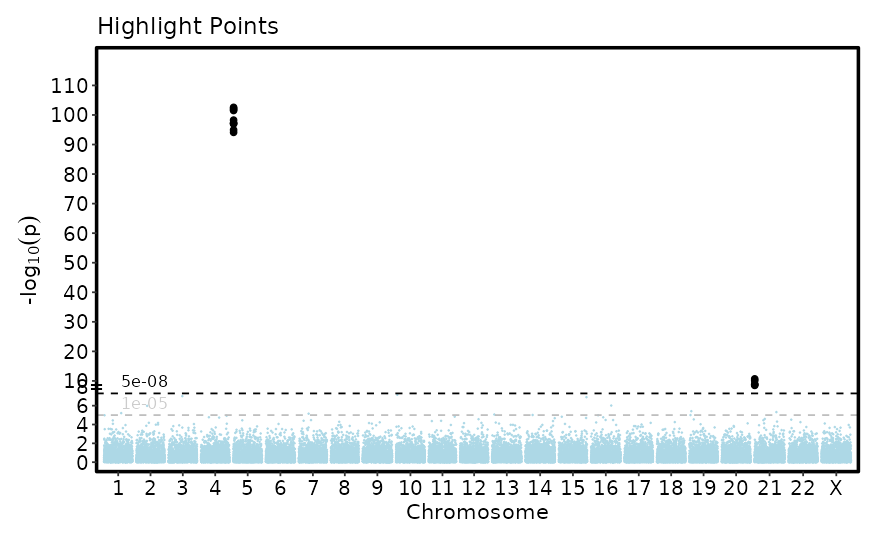
# }